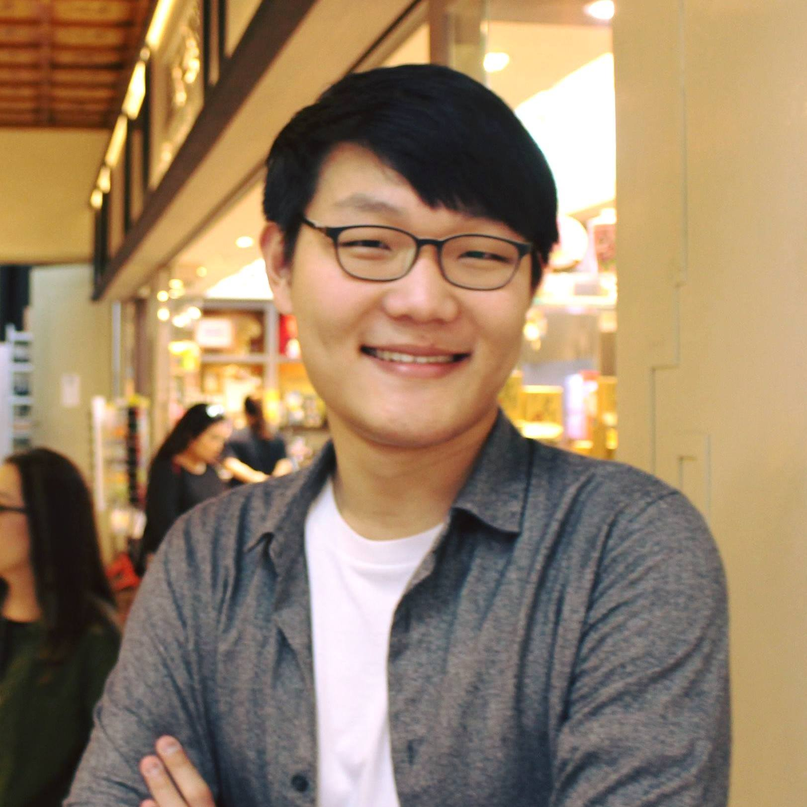

 I am a Physics PhD student at Stanford University, studying experimental particle physics and cosmology. Currently, I work on the ATLAS experiment. More generally, I am interested in the intersection of particle physics and cosmology, the interface between theories and experiments, the applications of deep learning and other novel algorithms in physics, and artificial intelligence. I am also very passionate about physics education and career counseling.
Outside of physics, I spend time writing, playing and watching basketball, playing around with non-physical datasets, and sleeping.
Before coming to Stanford, I was an undergraduate student at University of Rochester. I graduated in May 2017 with a B.S. in Physics & Astronomy with Highest Distinction and a B.A. in Mathematics.